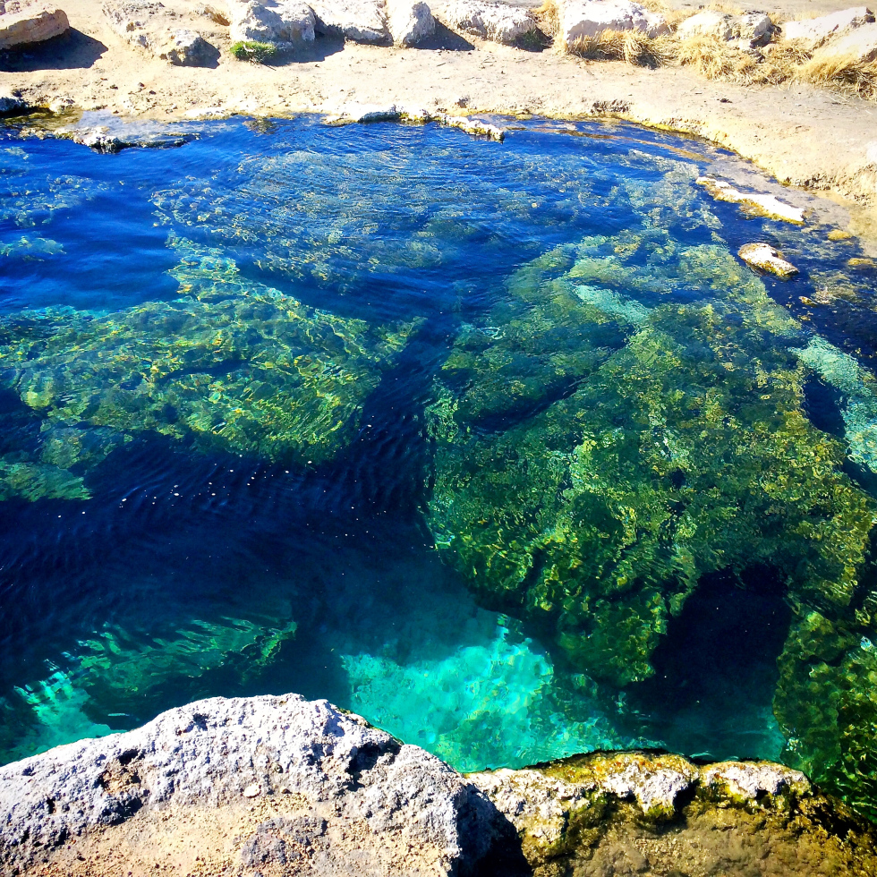
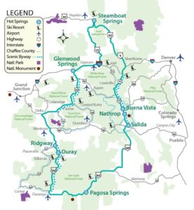

Logged in as {{first.name}} Logout
"There are few things more relaxing than soaking in a natural hot spring while you take in the incredible scenery. These waters are perfect for easing sore muscles, relaxing your mind and soothing your soul. Here are seven incredible hot springs in the United States to visit in 2019."
 Learn MoreA 720-mile driving tour of the state’s 19 diverse geothermal mineral springs, with stops in Buena Vista, Nathrop, Salida, Pagosa Springs, Ouray, Ridgway, Glenwood Springs and Steamboat Springs. Each Colorado hot springs destination offers visitors a one-of-a-kind experience. Explore vapor caves, hot pots, terraced pools, enormous travertine formations and fun-filled aquatic centers.
 Learn More